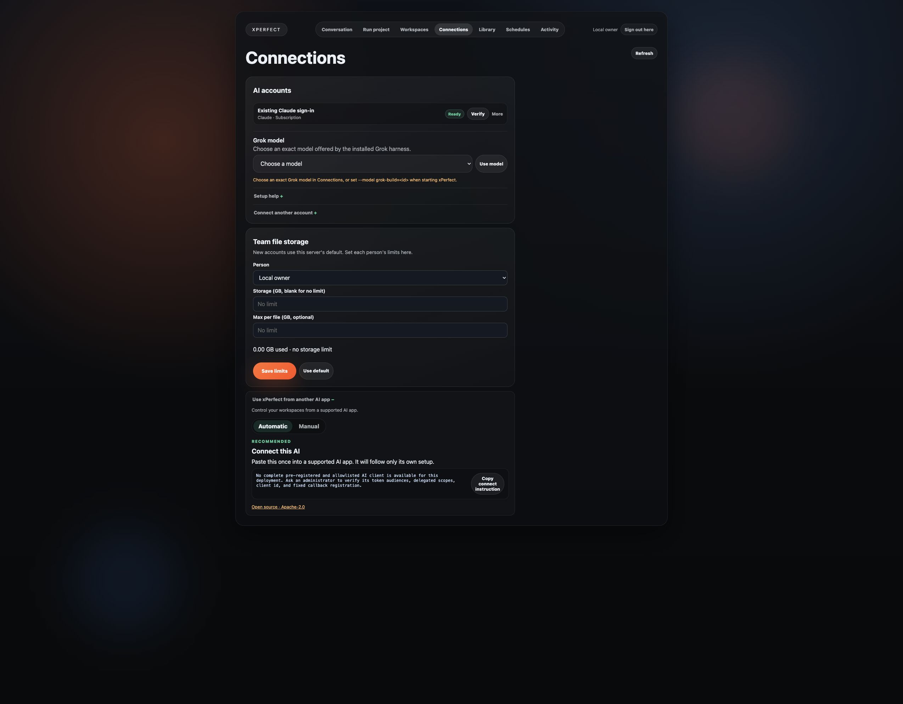

Mac · local launcher
Git, Python 3.11+, uv and Claude Code or Codex must already be installed. This test used Apple Silicon.
Run xPerfect. Connect your AI. Give an expert its files and skills. Come back to the same workspace—from the app, Codex or Claude.
A workspace keeps the files. A worker is the AI that uses them. xPerfect lets you keep and reuse both.
Git, Python 3.11+, uv and Claude Code or Codex must already be installed. This test used Apple Silicon.
The same local command is documented. A Linux-host install has not been executed in this session.
Do not promise identical setup yet. The package launcher requires a Unix Docker socket. No Windows host was available for this test.
git clone https://github.com/xPerfectAI/xPerfect.git
cd xPerfect
./xperfect start
Use the official uv, Claude Code or Codex setup if a prerequisite is missing.
The first start asks you to choose one. Press Enter to generate one. Keep it in your password manager.
Usually http://127.0.0.1:8780. Enter the password and choose Unlock.
./xperfect start --state-dir ~/.local/state/xperfect-demo --api-port 18766 --ui-port 18780 --mcp-port 18767
Use the same state directory for later commands. Never run two checkouts against the same state.
The existing Docker package is the shared foundation, but currently needs an explicit socket, service image ID, native image ID, ports and private credential output. There is no verified novice image-pull shortcut in this guide. The fresh Docker attempt hit exhausted local address pools; the local launcher was used to continue testing. Do not open local ports to the Internet as a cloud setup.
Ready means connected. Your first completed task proves it can do the work.

Use your intended account and exact model. xPerfect must not silently switch. A provider approval or personal-account confirmation belongs to you. Local workers run with your computer user's permissions. Your AI provider receives the task content required to do its work.
Create a reusable Stock expert. Use the files and skill I attach. Save your result as expert-proof.txt.

Start xPerfect first. Add its existing local MCP server once:
codex mcp add xperfect -- /absolute/path/to/xPerfect/xperfect mcp
Start an interactive Codex session, authorize xPerfect’s requested routine tools, and ask:
Use xPerfect to list my workspaces. Create a reusable Stock expert with my selected connected account. Add my files and skill inside its native harness. Run it and return the saved result and the workspace ID so I can use it again.
If you chose a custom state directory, append --state-dir /absolute/path/to/state after mcp. Use the setup you actually launched.
Start xPerfect first. From the project where you use Claude Code:
claude mcp add xperfect -- /absolute/path/to/xPerfect/xperfect mcp
Start a new Claude session, authorize xPerfect’s requested routine tools, and ask:
Use xPerfect to list my workspaces. Create a reusable Stock expert with my selected connected account. Add my files and skill inside its native harness. Run it and return the saved result and the workspace ID so I can use it again.
For custom state, add --state-dir /absolute/path/to/state. Authorize the requested workspace tools when your client asks. Account sign-in alone does not configure the client’s tool permissions.
In the tested default local setup, it is disabled because no client is registered. Manual mode is also blocked and shows the UI port instead of the separate MCP port. Use the documented stdio command above until this setup gap is fixed.

SKILL.md with a name, description and instructions.“Install this skill into your harness's normal skill folder. Keep these inputs and use the skill for future requests.”
One skill and one CSV. The skill contains a hidden test phrase and asks for a stock total. The request itself does not reveal the phrase.
Download plain skill ↓Claude uses .claude/skills/; Codex uses .agents/skills/. Let the worker use its harness. Do not add a custom router, plugin service or phrase-matching code.
Schedule this xPerfect workspace to run the installed onboarding-proof skill once in five minutes. Tell me when it is due, then show the completed run and saved file.
Keep xPerfect and the computer running. If the chosen account is busy, work may wait. For a recurring job, verify one real due run before relying on it.
Open Workspaces, find your expert, and open it. Use Steer for the next request. Reopen Files to check the saved result.
Use More → Duplicate to copy ordinary files. Current limit: the tested copy lost its installed native skill. Keep using the original expert, or explicitly reinstall the skill in the copy and test it. A personal account can also require a fresh confirmation.
“Find my Stock expert in xPerfect. Ask it to summarize this new file. Keep using the same workspace.”
The client discovers the actual tools. Save the worker/workspace ID rather than inventing a new endpoint for each expert.
The repository already includes skills/connect-glasshive/SKILL.md. Its name stays for compatibility. It is guidance for the native client, not another service.
Current gap: it points first-time users to the disabled hosted setup panel and recommends a launch shortcut that plain local clients cannot always use. Use the working stdio setup and normal request above until the skill gains the same local instructions. Do not create a second router to work around it.
Use the existing control plane: list workspaces, create a project and worker, run or continue it, read status and download artifacts. Local stdio uses the current OS identity. Local HTTP uses a separate private token. A hosted service needs supported human authentication, TLS and tenant isolation.
workspace_list
project_create
worker_create
worker_run
worker_message
workspace_status
workspace_artifacts
workspace_duplicate
The direct local API is separate from the UI: by default 127.0.0.1:8766. Use its private API token in the Authorization header, never a URL. Docker packages keep that runtime API private; use their exposed authenticated MCP.
workspace_launch is not currently a universal plain-client shortcut: the public documentation requires trusted source identity. Generic clients must use the supported project/worker steps. See the developer contract.
Fresh public source 5d9a8512 · 29 September 2026. These are flow results, not a percentage of code complete.
Tested 29 September 2026 · public source 5d9a851. A fresh Mac state, real Chrome and separate native Codex / Claude clients. “Partial” means the stated path still has a gap.
| User path | Observed result |
|---|---|
| Run locally | Mac host launcher passed. Docker stopped at exhausted local network pools. Windows, Linux-host and cloud parity remain unverified. |
| Connect and run | Existing Claude subscription became Ready. The UI produced welcome.txt with the selected account and exact Claude Opus 5.5 model. |
| Keep and reuse | UI result survived reload; a follow-up changed the same file. Claude MCP found and continued the same worker by alias. |
| Copy | Ordinary files copied (17 via Claude; 18 via Codex). But a real UI run of the skilled copy returned Unknown skill: its installed native skill was lost. Personal-account copies also need another owner confirmation. |
| Files and skill | MCP text bootstrap delivered the ordinary SKILL.md and CSV. Claude invoked its native Skill tool, produced the hidden phrase and total 51, then reused the skill. Browser download matched all 56 output bytes. Browser upload was not verified in this test run. |
| Schedule | UI one-time work fired at 13:31 UTC; file contains UI-SCHEDULE-OK 3. Claude MCP one-time work fired at 13:29 UTC; file contains total_quantity=51. Codex also completed its one-time skill run at 13:48 UTC. None of these jobs repeats. |
| External clients / API | Both clients discover MCP tools. Claude completed native work. Codex host recovery completed creation, native skill run, follow-up, 18-file copy and a real one-time scheduled run. Personal-account binding remains separate. Authenticated API file bytes matched the browser download; unauthenticated access returned 401. |


The complete new-user flow is not yet onboarding-ready. This guide never turns an untested route into a passed one.
| You see | Do this |
|---|---|
| No ready account | Connect the account for the selected worker. Wait for Ready, then run one small task. |
| Queued / account busy | Check the active workspace. Let it finish; do not launch copies to force progress. |
| Approval required | The account owner must approve the exact request. Do not switch identities. |
| Missing result | Check Watch and Files. A completed model answer and a downloadable artifact are different evidence. |
| Docker network error | Check the daemon's actual error. Do not prune personal volumes. The tested launcher did not expose address-pool exhaustion clearly. |
| App restarted | Use the same state directory. Reopen the workspace and verify files before resubmitting work. |
./xperfect doctor
./xperfect stop
./xperfect start
Stop keeps saved state. Use the same custom state argument if one was selected. Stop only your own instance and avoid interrupting work you want to keep running.
Source references: xPerfect public source · Codex MCP · Claude MCP. Guide source and maintenance. Results describe the dated source above; later product changes need fresh verification before these limits change.